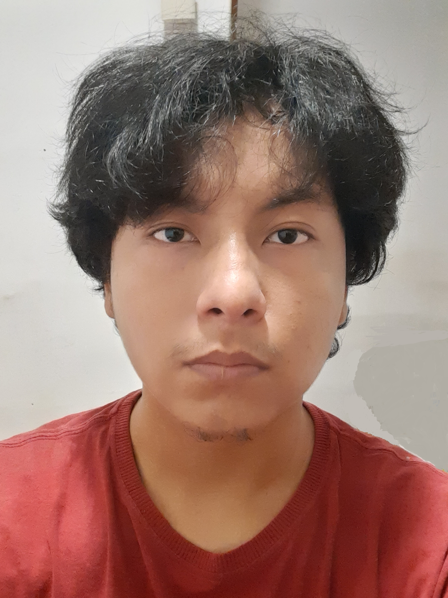

Jean Guale Tubay

DATOS PERSONALES
Nombres y Apellidos: Jean Pierre Guale Tubay
Fecha y lugar de Nacimiento: 04 de Octubre del 2002, Guayaquil
Sexo: Masculino
Estado Civil: Soltero
Teléfono: 096 174 2034
Domicilio: 04-3111506
E-mail: jeanpierre_aulayvida@hotmail.com
EXPERIENCIA LABORAL
- Edificio DIGMAT - Base Naval Sur | 1 año
REFERENCIAS PERSONALES
- Reynaldo Rene Guale Coello
- Padre (Guayaquil, Ecuador)
- Operario maquinista, Cierpronti S.A.
- Teléfono: 096 401 1476
- E-mail: reynaldoguale33@gmail.com
- Ing. Carlos Charlie Ferruzola Tubay
- Tío materno (Guayaquil, Ecuador)
- Asistente de Infraestructura, INTEROC S.A.
- Teléfono: 096 725 8771
- E-mail: charlieferruzola@outlook.com
- Obst. Karen Isabel Ferruzola Tubay
- Tía materna (Guayaquil, Ecuador)
- Obstetra, Centro Médico Salud Solidaria
- Teléfono: 096 219 3160
- E-mail: karen94_17@hotmail.com
-
FORMACIÓN ACADÉMICA
- Escuela Particular Mixta "Aula y Vida" | Educación Básica
- 2007 - 2014
- Colegio Fiscal "Bárbara Maridueña de Moran" | Educación Secundaria
- 2014 - 2017
- Colegio Fiscal Técnico "Provincia de Chimborazo" | Bachillerato Técnico
- 2017 - 2020
- Universidad de Guayaquil | Ingeniería de Software
- 2020 - Cursando